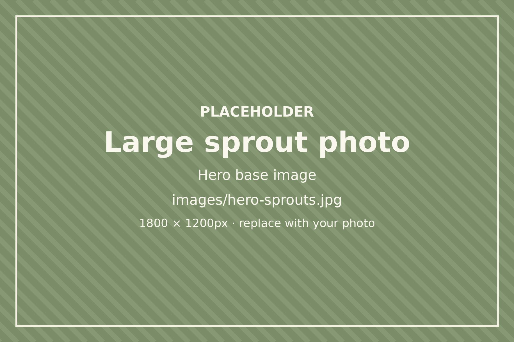
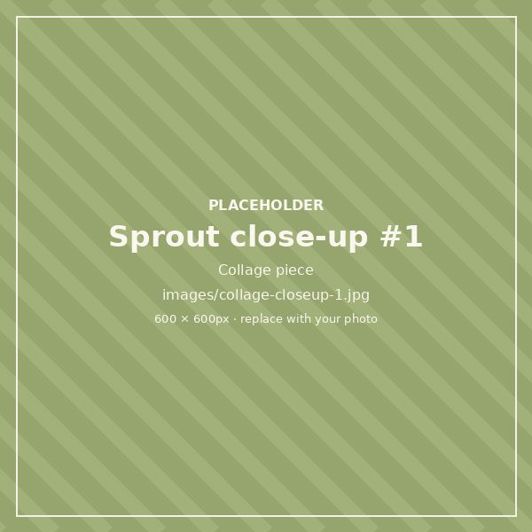
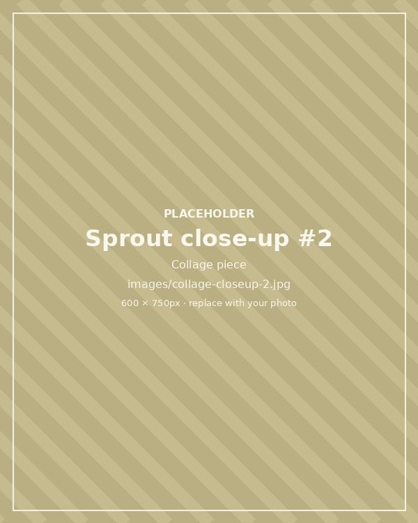

[BUSINESS NAME]
Small-batch organic sprouts, grown carefully in Ogden Valley.
Liberty & Eden, Utah
How I keep them safe
I grow organic broccoli, amaranth, and quinoa sprouts in small batches at home. Sprouts need warm, damp conditions to grow, so care at every step matters. Here is what I do.
- I start with organic, lab-tested seed from True Leaf Market and record every lot number.
- My well water is tested for coliform and E. coli, then filtered before it touches a seed.
- Every jar, tub, and tool is washed and sanitized between batches.
- Sprouts grow in small batches, drained well and kept at a steady temperature.
- They're harvested, dried, and refrigerated right away, then given out within 1–2 days.
- Every container is labeled with its harvest date and seed lot.
An honest note
Even with careful growing, raw sprouts carry some risk of foodborne illness. People who are pregnant, young children, older adults, and anyone with a weakened immune system should avoid eating them raw.